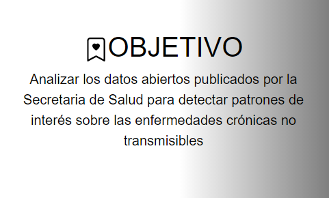
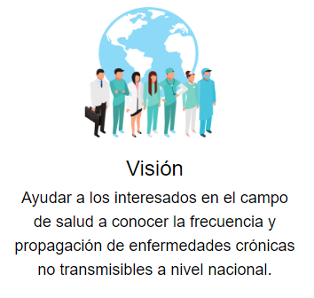
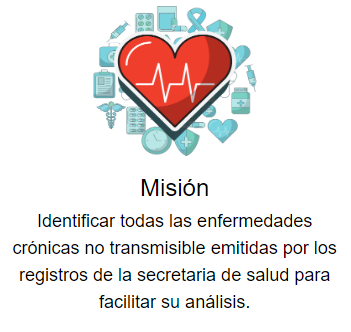
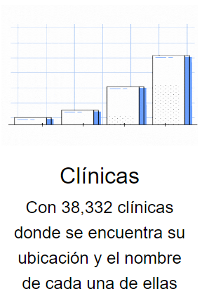
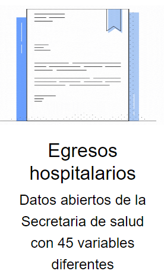
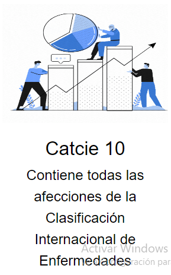
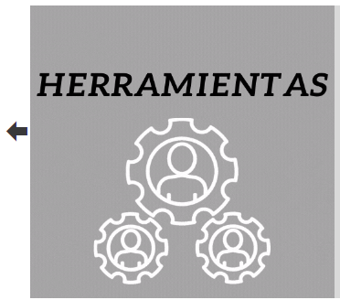
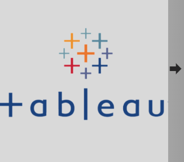

Está compuesta por un carrusel que nos da dos opciones para explorar, ya sea el centro de investigación de computación, la secretaria de salud y por último un apartado de la definición de Enfermedades Crónicas no Transmisibles

En la parte inferior del carrusel se encuntra descrito el objetivo la misión y la visión



En este apartado se describe los lugares de donde se obtuvo la información para poder realizar las visualizaciones



El siguiente carrusel que se presenta, muestra las herramientas que se utilizaron, como son Excel, MySQL y Tableau


